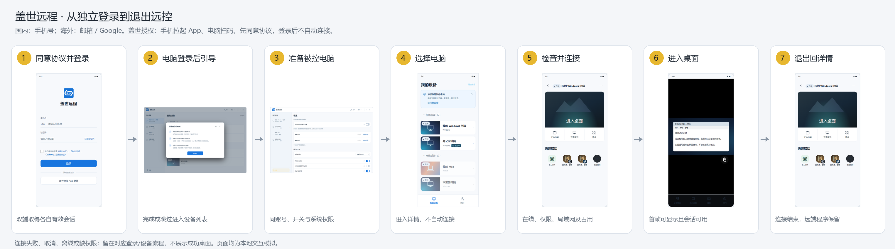

独立产品 · V4.13 AI办公 Demo · 2026.10.28
打开盖世远程，继续电脑上的 AI 工作。
移动 App 与电脑客户端独立运行，共用盖世账号。登录成功后先选择办公或非办公：办公进入 AI 会话列表，非办公进入设备列表；进入后可通过导航随时切换。支持全桌面与指定窗口串流。
演示登录：国内手机号13600008000，海外邮箱player@example.com；先获取验证码，填写任意6位数字，勾选协议后登录。符合格式的其他账号也可模拟登录，不是账号白名单，不发送真实短信或邮件。Demo顶部可用中文/English即时切换语言，地区及登录状态保持不变。
从登录到完成远控

本地 Demo 仅模拟登录、二维码、设备、文件和远控，不发送真实账号或远程指令。本期不支持游戏、虚拟按键、布局编辑及云分享。会话列表与窗口内容为交互模拟，真实会话识别、应用定位及窗口捕获待技术验证；手机原生 AI 对话保留演示（待继续技术调研，方案待确定）。二维码可在本地识别，同源页面间仅模拟确认；真实跨设备授权仍需账号服务。
当前以双端 V4.13 AI办公 Demo 评审交互；PRD与Word仍为上一版，待按新范围同步，旧版游戏与云分享说明不适用于本期。